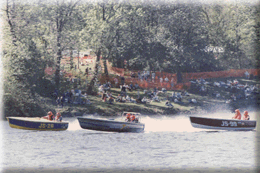
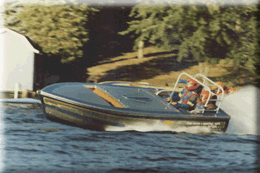

These boats are really not Hydroplanes, they're Skiffs, and they were new to our event in 1996.


Jersey Speed Skiffs are inboard powered racing boats that use 283 and 305 cubic inch automotive engines. They must run commonly available 'pump gas' and standard carburetion systems. They are generally about 16 feet in length and reach speeds up to 80 MPH.
These boats are a lot of fun to watch as they race side by side, bounding over waves and cornering on their gunwales.
 Return to the What Is A Hydroplane page.
Return to the What Is A Hydroplane page.
All contents Copyright © 1997 Spirit of Detroit THUNDERFEST, except where noted.
Web page created by Brian Reed.
 Return to the Top THUNDERFEST page.
Return to the Top THUNDERFEST page.
All Rights Reserved.